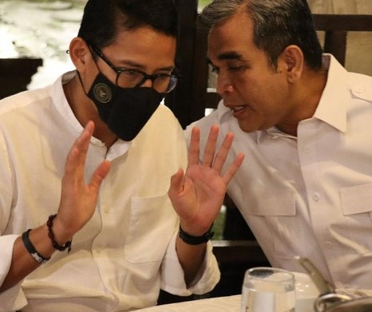

|
Minggu, 20 Maret 2022 05:53 WIB  Jakarta - Sekjen Partai Gerindra Ahmad Muzani berbicara mengenai komitmen Partai Gerindra dalam upaya membangkitkan ekonomi kerakyatan pascapandemi COVID-19. Hal itu dia sampaikan saat menghadiri acara ramah-tamah bersama seluruh pengurus DPC, DPD, dan anggota dewan Partai Gerindra se-Nusa Tenggara Barat (NTB). Muzani menyampaikan apresiasinya kepada Menteri Pariwisata dan Ekonomi Kreatif (Menparekraf) Sandiaga Uno yang dia nilai telah berkomitmen menjadikan Lombok menjadi destinasi wisata super prioritas. Masyarakat Lombok, kata Muzani, harus bersiap-siap untuk menjadi daerah wisata tujuan utama para wisatawan internasional. "Event MotoGP ini membuat Lombok menjadi destinasi wisata super prioritas yang luar biasa, ekonomi kerakyatan bangkit dan masyarakat merasakan itu saat ini. Kita semua patut ucapkan terima kasih kepada Presiden Jokowi dan juga Pak Sandi sebagai Menteri Pariwisata karena komitmennya NTB menjadi daerah tujuan wisata utama para turis dan wisatawan lokal," kata Muzani, Lombok, Sabtu (19/3/2022). "Dan Partai Gerindra akan terus berkomitmen untuk membantu pemerintah dalam upaya pemulihan ekonomi nasional pascapandemi COVID-19," imbuhnya. Muzani melanjutkan, melalui MotoGP ini, pemerintah telah membangkitkan ekonomi Lombok begitu pesat. Dia menyebut saat ini semua fasilitas yang ada seperti hotel-hotel, restoran, dan jalan-jalan dipenuhi wisatawan. Bahkan, sebutnya, pendapatan asli daerah (PAD) Lombok meningkat pesat. "Pak Jokowi telah memenuhi janjinya untuk menjadikan Lombok mejadi destinasi wisata prioritas yang luar biasa. Event motoGP ini membuat hotel-hotel tidak ada yang kosong, restoran penuh, tempat oleh-oleh dipadati wisatan, dan dalam sejarahnya baru kali ini Lombok macet," ujar Wakil Ketua MPR itu. "Pendapatan PAD Lombok meningkat luar biasa. Ini adalah bukti bahwa pariwisata bisa menjadi sumber kebangkitan ekonomi. Ini merupakan keberkahan kita dalam pariwisata," katanya. Kemudian, Muzani juga menyinggung soal loyalitas Sandiga Uno kepada Ketua Umum Partai Gerindra Prabowo Subianto. Menurutnya, komitmen Sandi sama dengan seluruh kader Partai Gerindra lainnya yakni bertekad menangkan Prabowo Presiden dan Gerindra di tahun politik 2024 mendatang. "Loyalitas Pak Sandi kepada Prabowo sangat tinggi. Beliau adalah kader yang loyal karena itu Pak Prabowo menyayanginya. Pak Sandi pun mengetahui hal itu," kata dia. "Kalau beliau ke sana kemari membangun pencitraan dirinya, itu semua dilakukan untuk Prabowo dan Gerindra. Karena itu kita merasa senang dan gembira Pak Sandi bersemangat dalam perjuangan kita," ujarnya yang disambut tepuk tangan kader Gerindra NTB. Selain itu, Muzani memberi arahan kepada seluruh kader Gerindra di NTB untuk bersiap diri menghadapi Pileg dan Pilpres 2024. Dia mengklaim NTB merupakan kandang Gerindra dan basis Prabowo. "Kecermatan kita dalam menyiapkan diri menghadapi Pilpres 2024 menjadi penting. Penguatan harus terus dilakukan karena NTB adalah kandang Gerindra dan basis Prabowo, karena itu kita harus menang di sini. 2024 saatnya Prabowo Presiden, Gerindra menang," ujar Muzani. Diketahui, acara tersebut turut dihadiri oleh Wakil Ketua Dewan Pembina Gerindra yang juga Menteri Pariwisata dan Ekonomi Kreatif Sandiaga Uno. Hadir pula sejumlah anggota DPR RI Gerindra dapil Lombok H Bambang Kristiono yang juga merupakan anggota Dewan Pembina Gerindra, Himatul Aliyah, Novita Wijayanti, dan Andre Rosiade. |